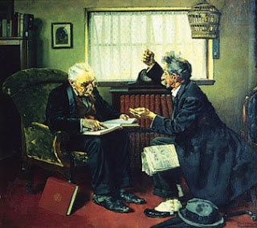

Bava Kamma 4 - The case of "here, it (your money) is yours"
A plaintiff claims to a defendant, "You owe me a hundred zuz ($5000)," and the defendant says, "I owe you only fifty zuz, and here, it is yours - I haven't spent them, and they are in your legal possession."
Rabbi Chiya says that the defendant has admitted part of the claim and has to take an oath.
Rav. Sheshet says that the fifty zuz are viewed as if the lender is holding them. The defendant admits nothing about them, and denies completely the other fifty, thus there is no oath, and he is not liable for anything else.
Test yourself